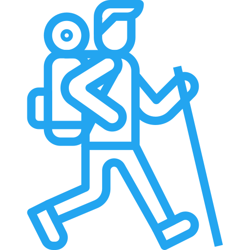

Время, ежедневно проводимое на открытом воздухе менее 1,5 часов в день
Время, ежедневно проводимое на открытом воздухе менее 1,5 часов в день
Ребенок затрачивает на работу вблизи более 3х часов в день, ежедневно
Длительное использование мобильных девайсов(гаджетов,ПК)
У ребенка выявлены аккомодационные нарушения(задержка, слабость аккомодации, низкие показатели ЗОА)
У ребенка выявлены бинокулярные нарушения(экзофория, аккомодационная экзотропия, высокое соотношение АК\А)
Наследственность
Возраст выявления близорукости менее(или равен) 7 годам
Ортокератологические линзы(ночные линзы)
Бифокальные контактные линзы
Очковая коррекция или коррекция не используется
Левый глаз
Правый глаз
Для левого глаза
Для правого глаза
Для левого глаза
Для правого глаза
Для левого глаза
Для правого глаза
Для левого глаза
Для правого глаза